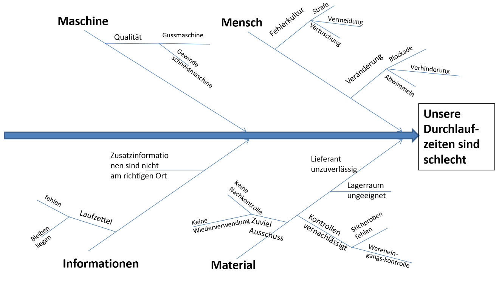

Total Cycle Time
http://goo.gl/3i8LCu
Team 2 (Bader, Näf, Weber, Wiget, Zigerlig)
3. Juni 2016
Inhalt
- Ursprünge & Zielsetzung
- Konzept des Ansatzes
- Einführungsbeispiel "Linksgewinde"
- Beurteilung & Fazit
- Diskussion
Ursprünge & Zielsetzung
"Total Cycle Time is the time it takes from the expression of a customer's need until that need is satified"
Source: Philip R. Thomas, 1990
Ursprünge
- Erstmals eingeführt bei "Texas Instruments"
- Eigentum der Thomas Group
- Thomas Group sieht TCT als Vorläufer vieler Prozessverbesserungsmethoden
Zielsetzung und Konzept
- Optimierung von Geschäftsprozessen:
- Fokus auf Geschäftsprozesse
- Fokus auf der Zykluszeit
- Prozesskosten senken
- Termintreue erhöhen
- Kundenzufriedenheit erhöhen
- Prozessverbesserung durch Eliminierung störender Barrieren
Fünf Schritte von TCT
- Prozesse darstellen
- Ziele und Kennzahlen festlegen
- Barrieren ermitteln und bewerten
- Barrieren beseitigen
- Verbesserungen messen
1. Prozesse darstellen
- Geschäftsprozesse darstellen mit geeigneter Notation
- Darstellungen dienen als Voraussetzung für den weiteren Ablauf
- Potentielle Barrieren & kritische Faktoren werden bereits notiert
2. Ziele und Kennzahlen festlegen
Das heisst: Festlegen von Ist und Soll Werten- Prozesszeit (Zykluszeit)
- Prozessqualität (First Pass Yield)
- Termintreue
3. Barrieren ermitteln und bewerten
Typen von Barrieren:- Sachbarrieren
- Prozessbarrieren
- Kulturbarrieren
4. Barrieren beseitigen
- Barrieren bewerten (Ertrag vs. Kosten)
- Aufwand schätzen
- Barrieren priorisieren
- Barrieren beseitigen
5. Verbesserungen messen
- Messung durchführen
- Messung vergleichen (mit Zielwerten)
- Weitere Schritte klären
Einführungsbeispiel
"Firma Linksgewinde stellt Schrauben für den Industriebedarf her. Am Beispiel soll das Konzept von TCT erläutert werden"
- Prozessaufnahme und -Abgrenzung
- Ursache-Wirkungs Analyse
- Barrieren identifizieren
- Barrieren Portfolio
- Werkzeuge zur Barrierenbeseitigung
- Beurteilung des Einführungbeispiels
1. Prozessaufnahme und -Abgrenzung
Folgende Prozesse der Firma Linksgewinde werden für TCT berücksichtigt.| Ressource Planning | AVOR | Qualitätskontolle |
| Schraubenproduktion | Beschaffung | Disposition |
| Konfektionierung | Giesserei | Lager |
2. Ursache-Wirkungs Diagramm
3. Barrieren identifizieren
3.1 Sachbarrieren
| 1. | Zusatzinformationen auf Laufzettel bleiben liegen |
| 2. | Gewindeschneidemaschinen sind unzuverlässig |
| 3. | Lagerinformation nicht nachgefürht |
3.2 Prozessbarrieren
| 4. | Qualitätskontrollen in der Produktion erfolgen zu spät |
| 5. | Qualitätskontrollen beim Beschaffungsprozess unzureichend |
| 6. | Ausschuss und Ausschuss-Material ungenügend gekennzeichnet |
3.3 Kulturbarrieren
| 7. | Leitmotiv der Firma: "Haben wir schon immer so gemacht" |
| 8. | Fehlerkultur: "Fehler gibt es nicht" |
4. Barrieren bewerten und Portfolio

5. Werkzeuge zur Barrierenbeseitigung
5.1 Barrieren Bewertungsformular

5.2 Messung Prozessverbesserung mit AIP
AIP steht für "Action in Process" ähnlich der Berechnung der Durchlaufzeit oder Prozessgeschwindigkeit
- Vor Beseitigung: 800'000 Schrauben pro Tag
- Nach Beseitigung: 950'000 Schrauben pro Tag
Totale Steigerung um 150'000 Schrauben pro Tag!
6. Beurteilung des Einführungsbeispiels
Fokus auf "low hanging fruits" - als erstes umgesetzt. Folgende Barrieren:
- Barriere 2 - Gewindeschneidmaschinen unzuverlässig
- Barriere 3 - Lagerinformation nicht nachgeführt
- Barriere 4 - Qualitätskontrolle Produktion erfolgt zu spät
Weitere Verbesserungen erfordern ungleich höhere Aufwände!
Gesamt Beurteilung & Fazit
- Wenig Quellen und Vergleichsbenchmarks bzgl. Optimierungspotentialen
- Kaum Würdigungen der Methode im deutschen Raum
- Kaum Anwender von TCT bekannt (ausser Texas Instruments)
- Stark auf das produzierende Gewerbe ausgerichtet, für Dienstleister aber möglich
- Priorisierung von Low-Hanging-Fruits ist sehr sinnvoll
- Barrierenbeseitigung über die Low-Hanging-Fruits hinaus ist aufwändig
Fortsetzung Gesamt Beurteilung & Fazit
- Kulturbarrieren sehr schwer zu überwinden - benötigt grossen Management Support
- TCT unterstützt die Prozesszeit und damit die "Time to Market"
- Andere Methoden sind offener und bieten mehr Expertisen
- Grundsätzlich auch für Dienstleister geeignet
- Eigene Prognose: TCT wird von anderen Methoden ersetzt und verblasst (Kaizen, Six Sigma)
Diskussion

Anhang
SWOT Analyse für TCT

SWOT Analyse für TCT